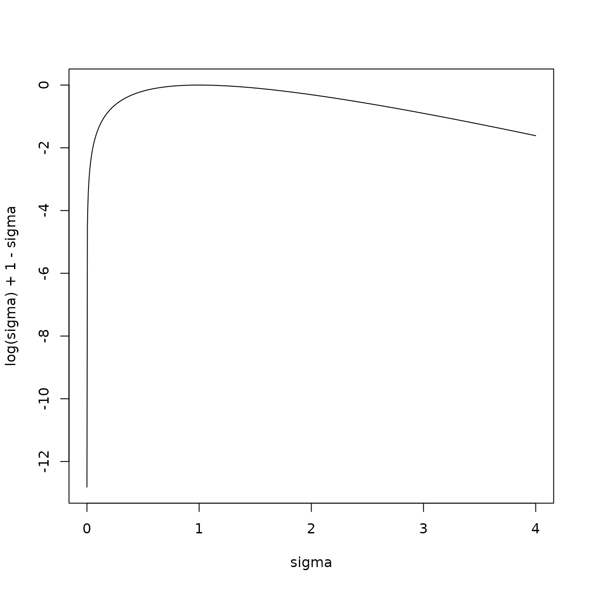

The purpose of this vignette is to present the calculations for a
peicewise linear regression where for each time step there are multiple
independent observations.
In the follow variables identified by Greek letters are considered
unknown.
Linear regression
At time step
the vector of iid observations
is explained by the design matrix
and modelled as a multivariate Gaussian distribution. Consider known,
‘’background’’, parameters
and precision matrix
deviation from which are modelled by
and
through the likelihood
Pre whitening the known values such that
and
gives
Grouping the known values into
the log likelihood is
Suppose an anomaly with common parameters occurs of
consecuative time steps in the set
.
The log-likelihood of
is
with the cost being twice the negative log likelihood plus a penalty
giving
Sufficent statistics
Computation is greatly aided by being able to keep adequate sufficent
statistics. Expanding the summation in the cost gives
Baseline: No Anomaly
Here
,
is an identify matrix and there is no penalty so
.
The resulting csot is
Collective Anomalies
Anomaly in Regression parameters
There is no change in variance so
is an identify matrix. The estimate
of
can be selected to minimise the cost by taking
Anomaly in Variance
These is no mean anomaly in the regression parameters so
.
The estimate of
therfore changes to
while the cost is
Anomaly in regression parameters and variance
Since
The estimate
of
can be selected to minimise the cost by taking
Subsitution of this result into the cost gives
which simplifies to
The cost is given by
Anomaly in Regression parameters
There is no change in variance so
.
The estimate of
is unchanged which gives a cost of
Anomaly in Variance
These is no mean anomaly in the regression parameters so
.
The estimate of
therfore changes to
while the cost is
Point anomaly
A point anomaly occurs at a single time instance and is represented
as a variance anomaly. Naively the cost could be computed using the
formulea for a variance anomaly as
with
Relating this to the background cost we see that point anomalies may
be accepted in the capa search when
The following plot shows
which indicates that point anomalies may be declared for both outlying
and inlying data.

In the case of
Fisch et al. control this by modifying the cost of a point anomaly so it
is expressed as
This has the effect of allowing only outlier anomalies, something
that can be much more easily acheived by taking
giving the cost as